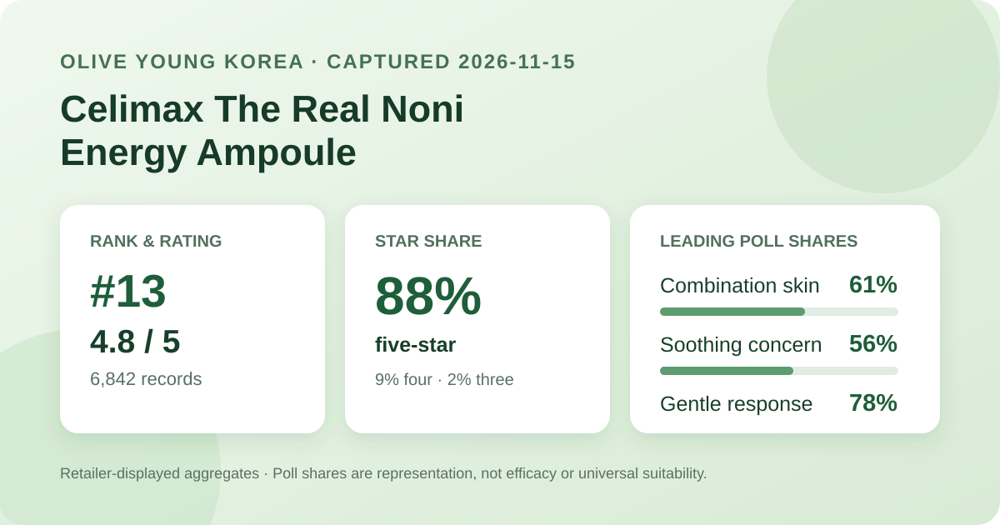

Data captured November 15, 2026. a Korean K-beauty retail platform displayed the title “셀리맥스 더 리얼 노니 에너지 앰플 80ml 기획 (+미스트 50ml)”; this article uses “Celimax The Real Noni Energy Ampoule” as a readable English label. It uses only the retailer's title, rank, aggregate rating, star shares, and shopper polls. It does not copy or translate individual review text, names, or photos, and it makes no claim of firsthand use.

The short version: Celimax The Real Noni Energy Ampoule appeared at number 13 in the captured skincare sales ranking. The ranking, product page, and official review statistics agreed on the product identity, while both the header and review view displayed 4.8 out of 5 from 6,842 records. Five-star ratings accounted for 88% of the shown distribution. Combination skin led the skin-type poll at 61%, soothing led the concern panel at 56%, and gentle led the irritation panel at 78%. These are retail signals, not proof of hydration, soothing, “energy,” ingredient performance, or universal tolerance.
The captured official statistics showed an average of 4.8 stars from 6,842 review records. That is a substantial retail-feedback base for describing the direction of ratings on this listing at one point in time. It supports the narrow observation that the displayed feedback was strongly favorable. It does not convert the rating into a clinical score, a probability of satisfaction, or a guarantee about a later buyer's experience.
A storefront review base is shaped by who purchased, who chose to post, which orders were eligible, whether rewards or promotions were active, how older configurations were linked, and how the platform moderated records. The captured interface did not fully disclose those mechanisms. The count can also change after publication, so the capture date belongs beside the number rather than treating 6,842 as a permanent total.
The listing was an 80 ml ampoule plan with a 50 ml mist shown as an additional item. Review records may include linked configurations when the retailer treats them as the same formula family. That makes the aggregate useful at listing level, but it limits any attempt to assign every response to this exact gift bundle.
The displayed star shares were 88% five-star, 9% four-star, 2% three-star, 0% two-star, and 0% one-star. The rows total 99% because the interface presents whole percentages. No missing percentage is reassigned or estimated here.
The 88% five-star share is the clearest positive signal in the dataset, while the combined four- and three-star rows show that the display was not literally unanimous. Zero-percent lower rows do not mean negative experiences are impossible; a whole-number interface can round a small nonzero share down to zero, and raw star counts were not exposed.
Ratings can reflect price, packaging, gift value, delivery, expectations, or campaign timing alongside impressions of the formula. Because no reliable anonymous aggregate-topic summary was available in the captured view, this article does not infer what shoppers praised or criticized by mining individual comments.
The skin-type poll showed 61% combination, 36% dry, and 3% oily. Combination respondents formed the majority of the displayed sample, while dry respondents represented a little over one-third. The oily share was small.
Those proportions describe who selected each label within the poll, not how well the ampoule performed for a skin type. The interface did not expose the poll denominator, response rate, or a standardized method for classifying skin. Self-reported skin type may also vary with season, climate, cleansing, hormones, medication, and current irritation. The 61% combination share is therefore not proof of suitability, and the 3% oily share is not a warning to avoid the product.
The concern panel displayed 56% soothing, 44% hydration, and 0% wrinkle or brightening. At the shown precision, the rows total 100%. The careful interpretation is that soothing was the leading concern label, with hydration also strongly represented.
The 56% response is not a clinical redness score, inflammatory marker, dermatologist assessment, or controlled before-and-after result. It cannot establish treatment of irritation, acne, dermatitis, or any medical condition. Likewise, the 44% hydration response is not a corneometer reading, transepidermal-water-loss measure, or evidence about how long moisture lasted.
A zero-percent wrinkle or brightening row does not establish absence of any relevant experience; it means the interface rounded that response to zero in this poll. The panel also does not show whether respondents selected a primary concern before use, a perceived benefit after use, or some mixture of both.
The irritation panel showed 78% gentle, 21% ordinary, and 1% felt irritation. These rows total 100%. Gentle was the dominant response, but more than one-fifth selected ordinary and the irritation category was not zero.
This panel cannot predict an individual's tolerance. It does not screen allergies, active dermatitis, a compromised barrier, prescription use, or interactions with exfoliants, retinoids, acne treatments, fragrance, and other routine steps. “Gentle” is an aggregate shopper label, not a medical safety evaluation. The 1% irritation row does not reveal severity, timing, cause, duration, or whether another product was involved.
The retailer describes the main item as an 80 ml ampoule. In general skincare language, an ampoule is a leave-on liquid or gel-serum format commonly placed after cleansing and toner and before heavier creams. That category-level description does not verify this product's actual viscosity, slip, tack, fragrance, drying time, finish, pilling behavior, or compatibility with sunscreen and makeup.
I did not open, smell, spread, layer, or wear this formula. The local illustration is built from abstract vector shapes and does not reproduce the product, packaging, color, or real texture. Sensory behavior depends on the current formula, amount used, skin condition, earlier steps, temperature, humidity, and what is layered afterward.
“Noni” is part of the retailer-displayed product name. That naming alone does not reveal which noni-derived ingredient is present, its concentration, extraction method, stability, delivery, or biological activity in the finished formula. This analysis does not estimate a percentage from the name, marketing language, product color, or review sentiment.
The word “energy” is also naming language, not a defined skincare endpoint. No assay, antioxidant measure, biomarker, cell-energy assessment, redness measure, barrier test, or controlled comparison was available. The 4.8 rating cannot isolate an effect from any one ingredient, and the poll responses cannot establish a mechanism.
Rank 13 describes one moment in a Korean K-beauty retail platform's skincare sales list. It is not a quality rank, a clinical ranking, or a recommendation that this is the thirteenth-best skincare product. Promotions, gifts, advertising, inventory, seasonality, and short-term demand can all move a listing.
The captured page displayed an 80 ml ampoule plan with a 50 ml mist, a ₩39,200 reference price, and a ₩29,000 promotional price. Those details can change independently of the reviews. Before purchasing, confirm the current formula, seller, exact bundle, gift conditions, stock, expiry information, return terms, and checkout price on the live listing.
Celimax The Real Noni Energy Ampoule was the first distinct unpublished product after twelve covered ranking entries. Its captured storefront snapshot is coherent: rank 13, a 4.8 average across 6,842 records, 88% five-star, a 61% combination-skin share, a 56% soothing response, and a 78% gentle response.
The responsible conclusion stops at that descriptive level. The data does not prove soothing, hydration, “energy,” antioxidant activity, barrier repair, or universal tolerance. Its best use is to understand the direction and composition of retailer feedback while keeping the fast-moving count, rounded display, unknown poll denominators, visible ordinary and irritation rows, bundle context, and lack of controlled measurements in view.
The captured official statistics showed 4.8 out of 5 from 6,842 records. The displayed star shares were 88% five-star, 9% four-star, 2% three-star, and 0% each for two- and one-star.
Combination skin led at 61%, followed by dry at 36% and oily at 3%. That describes representation, not proven suitability.
No. It is a rounded shopper-poll response, not a controlled redness, inflammation, or clinical result.
No. The panel cannot predict allergies, sensitivity, routine interactions, or individual tolerance.
No. The analysis uses retailer-displayed aggregates only and does not claim firsthand use.
Source: Olive Young Korea product listing for Celimax The Real Noni Energy Ampoule, captured November 15, 2026. Rank, price, availability, gifts, counts, percentages, and listing details can change after capture.
Published by The K-Beauty Data Desk. This is an editorial analysis of retailer-displayed aggregates, not medical advice or a substitute for the current product label.
← All reviews · Review-volume rankings · Skin-poll explorer · Methodology